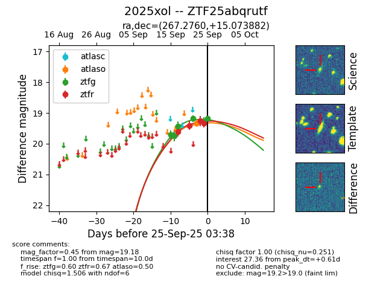
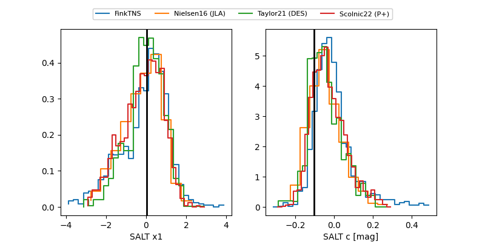

FINK: ZTF25abqrutf
Lasair: ZTF25abqrutf
ALeRCE: ZTF25abqrutf
TNS: 2025xol
YSE: 2025xol
ZTF25abqrutf (ztf,fink)
2025xol (tns,yse)
equatorial (ra, dec) = (267.2760,+15.07388)
galactic (l, b) = (39.8695,+20.45351)


last atlaso=19.33, ztfg=19.18, ztfr=19.33
1 atlaso, 6 ztfg, 4 ztfr detections